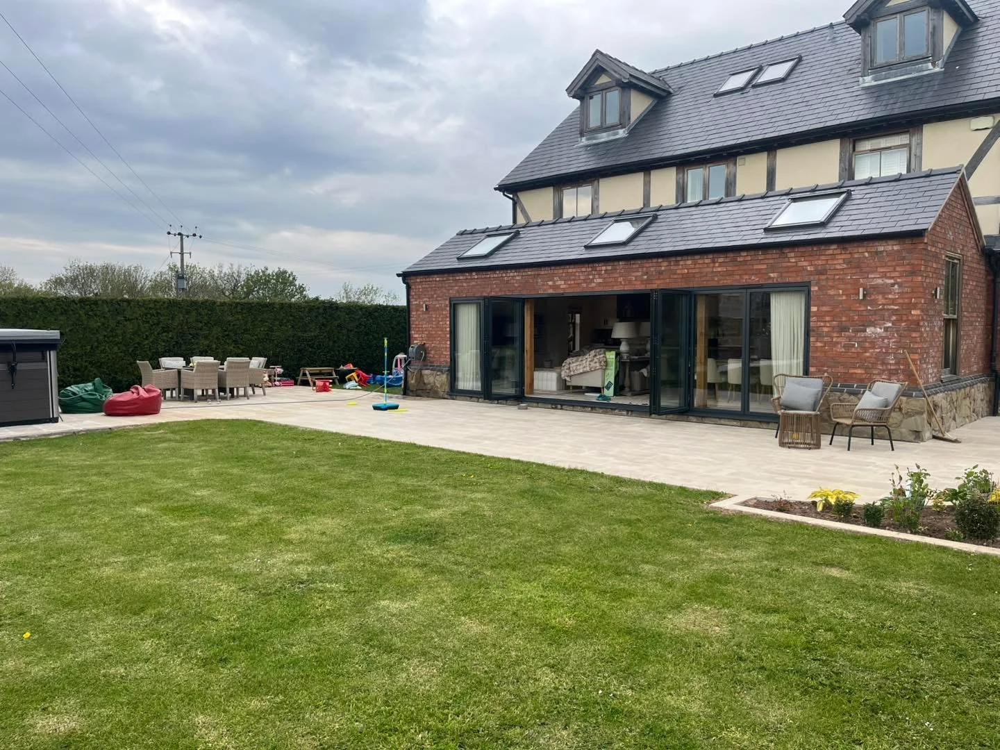
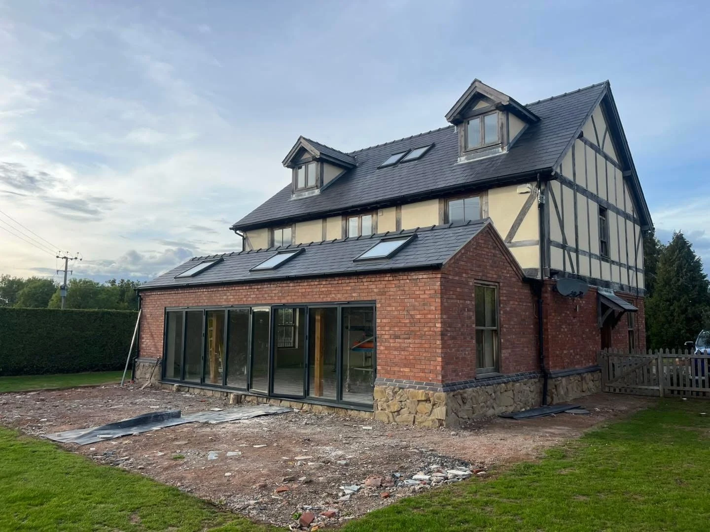

APEX CONSTRUCTION & LANDSCAPING
Built for your home.
Shaped for your life.
Construction and landscaping that bring your property together. Extensions, patios, driveways and brickwork, with a free quote to get you started.
BUILT AROUND YOUR HOME
Your home.
Made to work beautifully.
APEX brings construction and landscaping together. From brick extensions to garden terraces and driveways, the project details matter: levels, materials, access and the way each space connects with the next. Share your plans and request a free quote.
Discuss your project →
FROM BUILD TO GARDEN
More than an extension.
A connection to outdoors.
See this rear extension before the landscaping was finished, then with its paved terrace and lawn in place. Glazed doors connect the new living space with the garden.
Explore landscaping →
THE APEX PROJECT COLLECTION
Work that makes a difference.
Construction, paving and landscaping projects, with work in progress and finished details. Select a photograph to enlarge.
A BOUNDARY REBUILT
From leaning wall
to a clean finish.
Before, during and after a wall repair.


YOUR PROJECT, STEP BY STEP
A clear place to start.
Share your ideas
Tell us what you want to change. Include photographs, approximate measurements and your postcode.
Discuss the details
Talk through materials, access, levels and the scope of the work.
Request a free quote
Understand the proposed work and quote before agreeing the next step.
BEFORE WE START
A few useful answers.
What projects can I enquire about?
Construction and extensions, garden landscaping, patios and steps, driveways and paving, brickwork and wall repairs.
Are quotes free?
Yes. Contact APEX with your project details and location to request a free quote.
Can I send photographs?
Yes. Complete the WhatsApp form, review the draft and attach photographs or plans before sending.
Do you cover my area?
Send your postcode and a description of the work so we can check coverage and availability.
Can you help with more than one part of a project?
Yes. Tell us if your plans combine construction, paving, walls or landscaping so the whole scope can be discussed.
YOUR FREE PROJECT QUOTE
Good ideas.
Start with a conversation.
Tell APEX about your plans, the space and your location. This form prepares a WhatsApp draft for you to review, attach photos and send.
Send your postcode to check project coverage and availability.